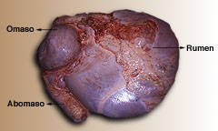
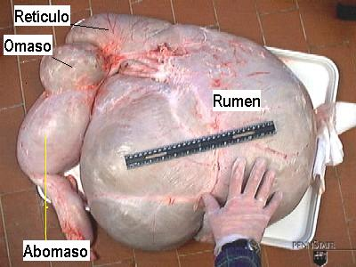

El cuarto estomago es el abomaso. Este estomago parece al estómago de los animales no-rumiantes. Secreta ácidos fuertes y muchas enzimas digestivas. En los animales no-rumiantes, los alimentos primeros son digeridos en el abomaso. Sin embargo en rumiantes, los alimentos que entran el abomaso son compuestos principalmente de partículas no-fermentadas de alimentos, algunos productos finales de la fermentación microbiana y los microbios que crecieron en el rumen.
 